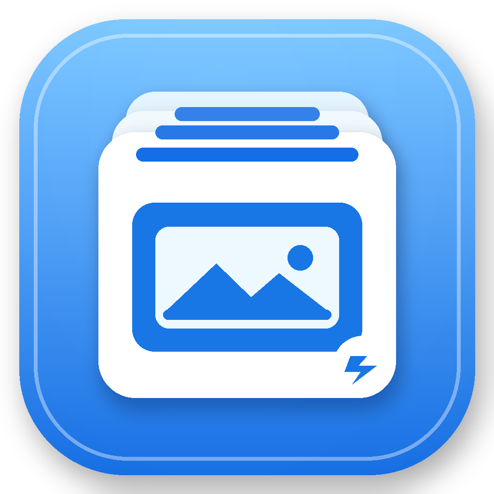

X3F Quick Viewer
SIGMA X3FをFinderのサムネイルとQuick Lookで表示するmacOSユーティリティ
基本的な使い方
- X3F Quick Viewerを一度起動します。
- FinderでX3Fファイルを開くと、写真サムネイルが表示されます。
- X3Fを選択してスペースキーを押すと、Quick Lookで大きく表示されます。
アプリ本体を常時起動しておく必要はありません。
表示されない場合
- アプリ内の「表示されないとき」から、macOSのQuick Look機能拡張設定を確認してください。
- Finderを開き直すか、Macを再起動するとキャッシュが更新される場合があります。
- 速度確認はMac内蔵SSDへコピーしたX3Fで行ってください。
対応範囲
代表ファイルによる確認済み：dp1 Quattro、DP2 Merrill、SD1 Merrill、SD15、旧世代DP2。
すべての機種・撮影モードを保証するものではありません。X3F内に有効な埋め込みJPEGがない場合は表示できません。
お問い合わせ・不具合報告
不具合報告は、次のGitHub Issuesページからも送れます。
X3F Quick Viewer Support Issues
報告時は、Macの機種、macOSのバージョン、SIGMAカメラ機種、問題が起きるX3Fの世代を記載してください。写真ファイルを公開添付する必要はありません。
X3F Quick Viewerは独立して開発されたユーティリティで、株式会社シグマとの提携・承認関係はありません。